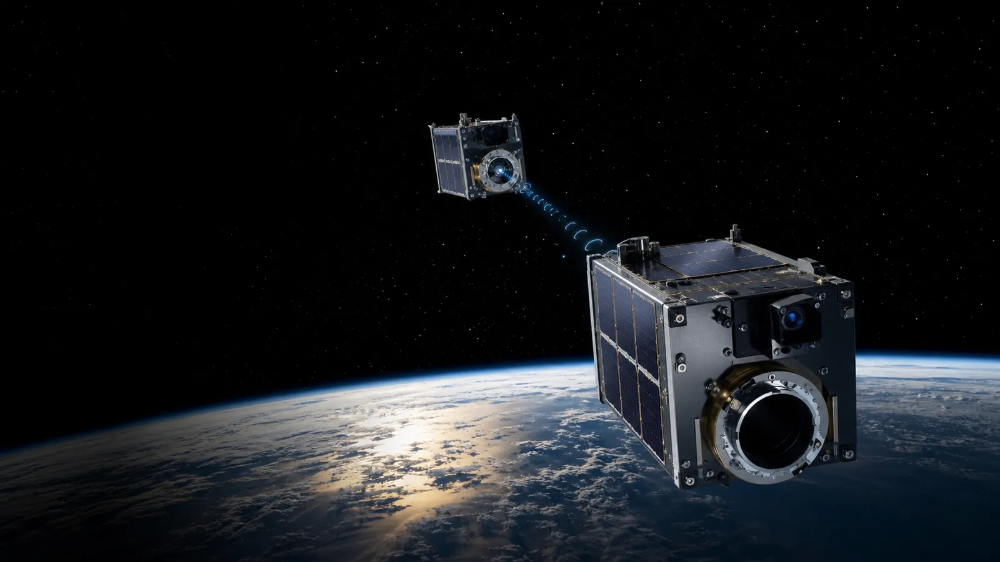

Alba Space. Percepción más allá.
Sistemas de visión para satélites pequeños: saber hacia dónde apuntan, acercarse a otro objeto y observar la Tierra.
Tres sistemas, una misma mirada.
Una cámara, cómputo a bordo y algoritmos propios para convertir lo que ve el satélite en orientación, distancia e información.
-
Star Tracker
Una cámara mira el cielo; el algoritmo identifica las estrellas y calcula hacia dónde apunta el satélite. Lo diseñamos para CubeSats, y también para seguir basura espacial y apoyar el acercamiento.
En pruebas en tierra -
Acercamiento y acoplamiento
Visión para detectar un objetivo, estimar su posición relativa y acompañar la maniobra de aproximación.
En desarrollo -
Observación de la Tierra
Cargas compactas para tomar imágenes, calibrarlas y elegir lo útil antes de enviarlo a tierra.
En desarrollo
El Star Tracker usa un algoritmo propio y lo hemos probado con una cámara comercial bajo el cielo real. Todavía no ha volado, y no publicamos cifras de precisión hasta medirlas en condiciones de vuelo.

De componente a misión.
Masa, potencia, cómputo y comunicaciones son parte del diseño desde el primer día, no notas al pie.
Definir
El objetivo de la misión, el escenario, las interfaces y cómo se va a medir el desempeño.
Prototipar
Óptica, electrónica y algoritmos, probados en un banco que se parezca a la misión.
Integrar
Conectar el sistema con el satélite, su telemetría y su operación.
Validar
Ensayos y evidencia para reducir el riesgo antes de la siguiente etapa.
¿Qué debe ver tu misión?
Componentes, cargas útiles, software de navegación y análisis de imágenes. Platícanos qué necesitas y te decimos con honestidad en qué punto estamos.